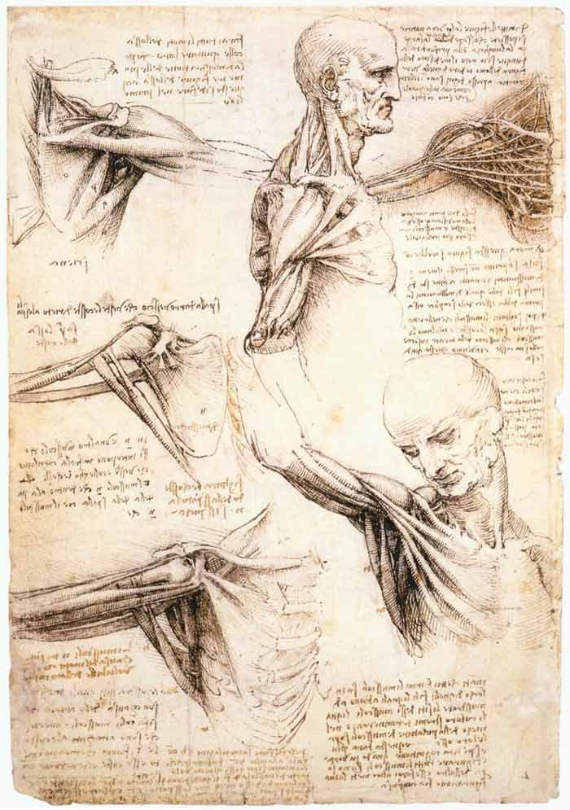

What the Old Masters Knew About Anatomy: Leonardo’s Human Anatomy
[a] Artist/ Group/Tribe
Leonardo da Vinci (1452-1519), an Italian polymath of the High Renaissance, is renowned for his contributions to art, science, and anatomy. As a painter, engineer, and scientist, his work epitomizes the Renaissance humanist ideal. Da Vinci's anatomical drawings are celebrated for their accuracy and detail, revealing insights that were revolutionary at the time.
[b] Historical and Socio-Cultural Context (Time-frame)
During the Renaissance, there was a resurgence of interest in classical knowledge, which spurred advancements in various fields including anatomy. Between 1500 and 1510, Leonardo conducted extensive studies on the human body, unprecedented in their scope and precision. These studies were conducted against a backdrop of growing humanist influences, as scholars sought to reconcile art with empirical observation.
[c] Symbolism and/or Iconography
Leonardo's anatomical sketches symbolize the profound curiosity and innovation of the Renaissance. His detailed renderings of the human form not only demonstrate artistic skill but also a profound quest for understanding the mechanics of life. The human body in these sketches serves not merely as a subject but as an icon of the human experience—beautifully complex and intrinsically linked to the universe.
[d] Stylistic Significance (Elements of Art/Principles of Design)
Leonardo’s drawings are characterized by their meticulous detail and clarity. Utilizing principles of proportion, balance, and harmony, he effectively communicates the intricacies of human anatomy. The crisp lines, shading, and perspective he used were innovative at the time, providing a bridge between artistic representation and scientific documentation.
[e] Social/Cultural Inequities
While Leonardo's work is celebrated today, the socio-cultural context of his time was fraught with inequality. Dissections were often conducted in secrecy due to the Church's restrictions on studying human bodies. Despite these limitations, Leonardo was privileged in accessing corpses for study, a resource not easily available to all scholars.
[f] Description of Disease & Etiology
In his anatomical studies, Leonardo did not shy away from depicting diseased organs and abnormal structures. Although he did not always fully understand the diseases he depicted, his observations laid the groundwork for future medical research. His drawings include the effects of aging and physical degradation, highlighting conditions unexplored at the time.
[g] Pathology Signs/Signifiers of Illness
Leonardo's anatomical sketches capture various signs of illness such as muscle atrophy and bone deformities. By observing and illustrating these variations, Leonardo provided insight into the pathology of diseases, their progression, and physical manifestations, offering valuable observations for future anatomical studies.
[h] Treatment
While Leonardo himself did not propose treatments derived from his anatomical insights, his work laid a foundation for later medical advancements. His methodical observations contributed to a more comprehensive understanding of human physiology, which would eventually inform medical treatments and practices in subsequent centuries.
[i] Social Determinants of Illness
Leonardo's era did not fully comprehend social determinants of health as we do today. However, through his works, one could infer the impact of lifestyle, occupation, and environment on the body. His observations captured the physical toll of disease and aging on different social classes, albeit indirectly exploring these societal impacts.
[j] References and Citations
Some of the references I relied on for this write-up include:
1. Clayton, M. and Philo, R. (2010). Leonardo da Vinci: Anatomist. Royal Collection Trust.
2. Kemp, M. (2019). Leonardo da Vinci: The Marvellous Works of Nature and Man. Oxford University Press.
3. O'Malley, C. D. and Saunders, J. B. deC.M. (2009). Leonardo Da Vinci on the Human Body. Dover Publications.
4. Pedretti, C. (1978). Leonardo Da Vinci: Drawings of Human Anatomy. Johnson Reprint Corporation.
5. Gombrich, E. H. (1950). The Story of Art. Phaidon Press.